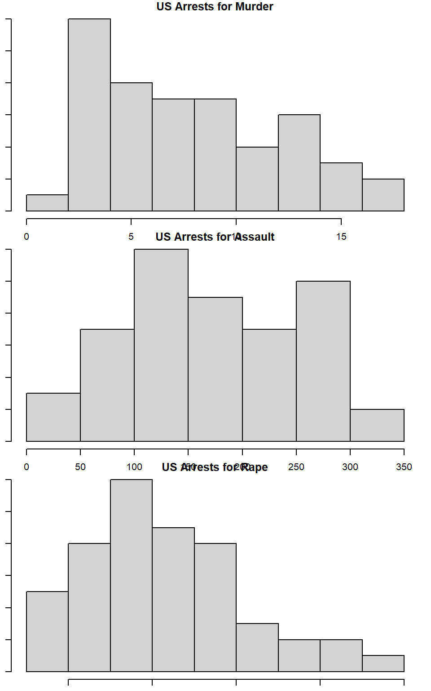

Assignments
This page will contain all the assignments you submit for the class.
Instructions for all assignments
I want you to submit your assignment as a PDF, so I can keep a record of what the code looked like that day. I also want you to include your answers on your personal GitHub website. This will be good practice for editing your website and it will help you produce something you can keep after the class is over.
Download the Assignment1.Rmd file from Canvas. You can use this as a template for writing your answers. It’s the same as what you can see on my website in the Assignments tab. Once we’re done with this I’ll edit the text on the website to include the solutions.
On RStudio, open a new R script in RStudio (File > New File > R Script). This is where you can test out your R code. You’ll write your R commands and draw plots here.
Once you have finalized your code, copy and paste your results into this template (Assignment 1.Rmd). For example, if you produced a plot as the solution to one of the problems, you can copy and paste the R code in R markdown by using the
``{r} ```command. Answer the questions in full sentences and Save.Produce a PDF file with your answers. To do this, knit to PDF (use Knit button at the top of RStudio), locate the PDF file in your docs folder (it’s in the same folder as the Rproj), and submit that on on Canvas in Assignment 1.
Build Website, go to GitHub desktop, commit and push. Now your solutions should be on your website as well.
Assignment 1
Collaborators: Carmen Avery, Rachel Villari, and Halle Wasser.
This assignment is due on Canvas on Monday 9/20 before class, at 10:15 am. Include the name of anyone with whom you collaborated at the top of the assignment.
Problem 1
Install the datasets package on the console below using install.packages("datasets"). Now load the library.
datasets::USArrests## Murder Assault UrbanPop Rape
## Alabama 13.2 236 58 21.2
## Alaska 10.0 263 48 44.5
## Arizona 8.1 294 80 31.0
## Arkansas 8.8 190 50 19.5
## California 9.0 276 91 40.6
## Colorado 7.9 204 78 38.7
## Connecticut 3.3 110 77 11.1
## Delaware 5.9 238 72 15.8
## Florida 15.4 335 80 31.9
## Georgia 17.4 211 60 25.8
## Hawaii 5.3 46 83 20.2
## Idaho 2.6 120 54 14.2
## Illinois 10.4 249 83 24.0
## Indiana 7.2 113 65 21.0
## Iowa 2.2 56 57 11.3
## Kansas 6.0 115 66 18.0
## Kentucky 9.7 109 52 16.3
## Louisiana 15.4 249 66 22.2
## Maine 2.1 83 51 7.8
## Maryland 11.3 300 67 27.8
## Massachusetts 4.4 149 85 16.3
## Michigan 12.1 255 74 35.1
## Minnesota 2.7 72 66 14.9
## Mississippi 16.1 259 44 17.1
## Missouri 9.0 178 70 28.2
## Montana 6.0 109 53 16.4
## Nebraska 4.3 102 62 16.5
## Nevada 12.2 252 81 46.0
## New Hampshire 2.1 57 56 9.5
## New Jersey 7.4 159 89 18.8
## New Mexico 11.4 285 70 32.1
## New York 11.1 254 86 26.1
## North Carolina 13.0 337 45 16.1
## North Dakota 0.8 45 44 7.3
## Ohio 7.3 120 75 21.4
## Oklahoma 6.6 151 68 20.0
## Oregon 4.9 159 67 29.3
## Pennsylvania 6.3 106 72 14.9
## Rhode Island 3.4 174 87 8.3
## South Carolina 14.4 279 48 22.5
## South Dakota 3.8 86 45 12.8
## Tennessee 13.2 188 59 26.9
## Texas 12.7 201 80 25.5
## Utah 3.2 120 80 22.9
## Vermont 2.2 48 32 11.2
## Virginia 8.5 156 63 20.7
## Washington 4.0 145 73 26.2
## West Virginia 5.7 81 39 9.3
## Wisconsin 2.6 53 66 10.8
## Wyoming 6.8 161 60 15.6install.packages("datasets")
library("datasets")
USArrests## Murder Assault UrbanPop Rape
## Alabama 13.2 236 58 21.2
## Alaska 10.0 263 48 44.5
## Arizona 8.1 294 80 31.0
## Arkansas 8.8 190 50 19.5
## California 9.0 276 91 40.6
## Colorado 7.9 204 78 38.7
## Connecticut 3.3 110 77 11.1
## Delaware 5.9 238 72 15.8
## Florida 15.4 335 80 31.9
## Georgia 17.4 211 60 25.8
## Hawaii 5.3 46 83 20.2
## Idaho 2.6 120 54 14.2
## Illinois 10.4 249 83 24.0
## Indiana 7.2 113 65 21.0
## Iowa 2.2 56 57 11.3
## Kansas 6.0 115 66 18.0
## Kentucky 9.7 109 52 16.3
## Louisiana 15.4 249 66 22.2
## Maine 2.1 83 51 7.8
## Maryland 11.3 300 67 27.8
## Massachusetts 4.4 149 85 16.3
## Michigan 12.1 255 74 35.1
## Minnesota 2.7 72 66 14.9
## Mississippi 16.1 259 44 17.1
## Missouri 9.0 178 70 28.2
## Montana 6.0 109 53 16.4
## Nebraska 4.3 102 62 16.5
## Nevada 12.2 252 81 46.0
## New Hampshire 2.1 57 56 9.5
## New Jersey 7.4 159 89 18.8
## New Mexico 11.4 285 70 32.1
## New York 11.1 254 86 26.1
## North Carolina 13.0 337 45 16.1
## North Dakota 0.8 45 44 7.3
## Ohio 7.3 120 75 21.4
## Oklahoma 6.6 151 68 20.0
## Oregon 4.9 159 67 29.3
## Pennsylvania 6.3 106 72 14.9
## Rhode Island 3.4 174 87 8.3
## South Carolina 14.4 279 48 22.5
## South Dakota 3.8 86 45 12.8
## Tennessee 13.2 188 59 26.9
## Texas 12.7 201 80 25.5
## Utah 3.2 120 80 22.9
## Vermont 2.2 48 32 11.2
## Virginia 8.5 156 63 20.7
## Washington 4.0 145 73 26.2
## West Virginia 5.7 81 39 9.3
## Wisconsin 2.6 53 66 10.8
## Wyoming 6.8 161 60 15.6dat<-USArrests # renames USArrests as dat
dat## Murder Assault UrbanPop Rape
## Alabama 13.2 236 58 21.2
## Alaska 10.0 263 48 44.5
## Arizona 8.1 294 80 31.0
## Arkansas 8.8 190 50 19.5
## California 9.0 276 91 40.6
## Colorado 7.9 204 78 38.7
## Connecticut 3.3 110 77 11.1
## Delaware 5.9 238 72 15.8
## Florida 15.4 335 80 31.9
## Georgia 17.4 211 60 25.8
## Hawaii 5.3 46 83 20.2
## Idaho 2.6 120 54 14.2
## Illinois 10.4 249 83 24.0
## Indiana 7.2 113 65 21.0
## Iowa 2.2 56 57 11.3
## Kansas 6.0 115 66 18.0
## Kentucky 9.7 109 52 16.3
## Louisiana 15.4 249 66 22.2
## Maine 2.1 83 51 7.8
## Maryland 11.3 300 67 27.8
## Massachusetts 4.4 149 85 16.3
## Michigan 12.1 255 74 35.1
## Minnesota 2.7 72 66 14.9
## Mississippi 16.1 259 44 17.1
## Missouri 9.0 178 70 28.2
## Montana 6.0 109 53 16.4
## Nebraska 4.3 102 62 16.5
## Nevada 12.2 252 81 46.0
## New Hampshire 2.1 57 56 9.5
## New Jersey 7.4 159 89 18.8
## New Mexico 11.4 285 70 32.1
## New York 11.1 254 86 26.1
## North Carolina 13.0 337 45 16.1
## North Dakota 0.8 45 44 7.3
## Ohio 7.3 120 75 21.4
## Oklahoma 6.6 151 68 20.0
## Oregon 4.9 159 67 29.3
## Pennsylvania 6.3 106 72 14.9
## Rhode Island 3.4 174 87 8.3
## South Carolina 14.4 279 48 22.5
## South Dakota 3.8 86 45 12.8
## Tennessee 13.2 188 59 26.9
## Texas 12.7 201 80 25.5
## Utah 3.2 120 80 22.9
## Vermont 2.2 48 32 11.2
## Virginia 8.5 156 63 20.7
## Washington 4.0 145 73 26.2
## West Virginia 5.7 81 39 9.3
## Wisconsin 2.6 53 66 10.8
## Wyoming 6.8 161 60 15.6Load the USArrests dataset and rename it dat. Note that this dataset comes with R, in the package datasets, so there’s no need to load data from your computer. Why is it useful to rename the dataset?
Answer: It’s useful to rename the dataset so that we know specifically which dataset we are working with. Additionally, when we edit the dataset it is helpful to have a differentiation (in name) from the original dataset. Additionally “dat” is shorter than the original dataset name.
Problem 2
Use this command to make the state names into a new variable called State.
dat$state <- tolower(rownames(USArrests))
names(dat)
# This line creates a new variable: statesThis dataset has the state names as row names, so we just want to make them into a new variable. We also make them all lower case, because that will help us draw a map later - the map function requires the states to be lower case.
List the variables contained in the dataset USArrests. Answer: The variables are murder, assault, urbanpop, and rape.
Problem 3
What type of variable (from the DVB chapter) is Murder?
Answer: According to the DVB chapter, murder is a quantitative variable.
What R Type of variable is it?
Answer:In R, Murder is a character variable.
Problem 4
What information is contained in this dataset, in general? What do the numbers mean?
Answer: This dataset lists the average rate of arrests in each state for a specific type of crime. For example, in Iowa there has been an average of 2.2 arrests for murder. The fact that some of the data are listed as decimal numbers indicates that the dataset is reporting averages, as there cannot actually be 2.2 real arrests.
Problem 5
Draw a histogram of Murder with proper labels and title.
hist(dat$Murder, main="US Arrests for Murder", xlab="Average Arrests", ylab="Frequency of Average Arrests") # This line contains the code for the histogram, including its title and axis namesProblem 6
Please summarize Murder quantitatively. What are its mean and median? What is the difference between mean and median? What is a quartile, and why do you think R gives you the 1st Qu. and 3rd Qu.?
Answer: Murder’s mean is 7.788. Its median is 7.25. The mean is the average of all values in the dataset, whereas the median is simply the middle value of those listed from smallest to largest. The median is also synonymous with the second quartile, Q2. A quartile is when the values of a dataset are divided into four groups. R gives the first and third quartiles because these are common values used in statistics, so it is helpful for R to calculate them automatically.
a<-c(13.2, 10.0, 8.1, 8.8, 9.0, 7.9, 3.3, 5.9, 15.4, 17.4, 5.3, 2.6, 10.4, 7.2, 2.2, 6.0, 9.7, 15.4, 2.1, 11.3, 4.4, 12.1, 2.7, 16.1, 9.0, 6.0, 4.3, 12.2, 2.1, 7.4, 11.4, 11.1, 13.0, 0.8, 7.3, 6.6, 4.9, 6.3, 3.4, 14.4, 3.8, 13.2, 12.7, 3.2, 2.2, 8.5, 4.0, 5.7, 2.6, 6.8) # This line creates the label "a" for the set of data values in Murder.
mean(a) # This code calculates the mean of a. ## [1] 7.788median(a) # This code calculates the median of a. ## [1] 7.25Problem 7
Repeat the same steps you followed for Murder, for the variables Assault and Rape. Now plot all three histograms together. You can do this by using the command par(mfrow=c(3,1)) and then plotting each of the three.
b<-c(236, 263, 294, 190, 276, 204, 110, 238, 335, 211, 46, 120, 249, 113, 56, 115, 109, 249, 83, 300, 149, 255, 72, 259, 178, 109, 102, 252, 57, 159, 285, 254, 337, 45, 120, 151, 159, 106, 174, 279, 86, 188, 201, 120, 48, 156, 145, 81, 53, 161) # creates the label "b" for the set of data values in Assault
mean(b) # calculates the mean of Assault## [1] 170.76median(b) # calculates the median of Assault## [1] 159b<-c(236, 263, 294, 190, 276, 204, 110, 238, 335, 211, 46, 120, 249, 113, 56, 115, 109, 249, 83, 300, 149, 255, 72, 259, 178, 109, 102, 252, 57, 159, 285, 254, 337, 45, 120, 151, 159, 106, 174, 279, 86, 188, 201, 120, 48, 156, 145, 81, 53, 161) # creates the label "c" for the set of data values in Rape
mean(b) # calculates the mean of Rape## [1] 170.76median(b) # calculates the median of Rape## [1] 159hist(dat$Assault, main="US Arrests for Assault", xlab="Average Arrests", ylab="Frequency of Average Arrests") # Code for histogram of Assault, including title and axis labelshist(dat$Rape, main="US Arrests for Rape", xlab="Average Arrests", ylab="Frequency of Average Arrests") # Code for histogram of Rape, including title and axis labelspar("mar")## [1] 5.1 4.1 4.1 2.1par(mar=c(1,1,1,1)) # command to fix the parameters to fix the fact that the figure margins were too large
par(mfrow=c(3,1)) # command to plot multiple histograms
hist(dat$Murder, main="US Arrests for Murder", xlab="Average Arrests", ylab="Frequency of Average Arrests")
hist(dat$Assault, main="US Arrests for Assault", xlab="Average Arrests", ylab="Frequency of Average Arrests")
hist(dat$Rape, main="US Arrests for Rape", xlab="Average Arrests", ylab="Frequency of Average Arrests") Answer: The mean of Assault is 170.76 and the median is 159. The mean of Rape is 21.232 and the median is 20.1.
What does the command par do, in your own words (you can look this up by asking R ?par)?
Answer: The command par allows you to set parameters when graphing, or to simply look up certain graphical parameters.
What can you learn from plotting the histograms together?
Answer:By plotting the histograms together, it becomes easier to see how the rates of arrests compare for the type of crimes committed. For example, it is evident from looking at the histograms that the rate of arrests for assault is much higher than that of murder. It is a helpful way to learn how the difrferent variables interact.
Problem 8
In the console below (not in text), type install.packages("maps") and press Enter, and then type install.packages("ggplot2") and press Enter. This will install the packages so you can load the libraries.
Assignment 2
Crim 250: Statistics for the Social Sciences
Name: Elizabeth Stoner Date: 09/27/2021
Instructions: Copy your code, paste it into a Word document, and turn it into Canvas. You can turn in a .docx or .pdf file. Show any EDA (graphical or non-graphical) you have used to come to this conclusion.
Problem 1: Load data
Set your working directory to the folder where you downloaded the data. setwd(“C:/Users/Elizabeth/Desktop/CRIM 250”)
Read the data
#Sys.which("make")
## "C:\\rtools40\\usr\\bin\\make.exe"
#install.packages("jsonlite", type = "source")
#install.packages('plyr', repos = "http://cran.us.r-project.org")library(readr)
dat_nsduh_small_1 <- read_csv("dat.nsduh.small.1.csv")
dat <- read_csv("dat.nsduh.small.1.csv")What are the dimensions of the dataset? dim(dat) The dimensions of the dataset are 171 observations of 7 variables.
names(dat) The names of the variables are mjage, cigage, iralcage, age2, sexatract, speakengl, and irsex.
Problem 2: Variables
Describe the variables in the dataset. class(dat\(mjage) class(dat\)cigage) class(dat\(iralcage) class(dat\)age2) class(dat\(sexatract) class(dat\)speakengl) class(dat$irsex) There are seven variables in the dataset. In R, each variable is numeric. Mjage stands for the age at which respondents used marijuana or hashish for the first time. Cigage shows the ages at which respondents first started smoking cigarettes every day. Iralcage is the ages at which respondents first tried alcohol. Age2 is the most recent age of the respondents. Irsex is the gender of the respondents and is a categorical variable. Sexatract lists the sexual attraction of the respondents. Speakengl lists how well the respondents speak English.
What is this dataset about? Who collected the data, what kind of sample is it, and what was the purpose of generating the data? The dataset is from the National Survey of Drug Use and Health. The dataset is used to understand the extent of drug use and other health issues throughout the United States. The data were collected by the Substance Abuse and Mental Health Services Administration, part of the U.S. Department of Health and Human Services. The NSDUH uses a stratified sample within the United States population. The purpose of gathering this data is to provide an understanding of the health issues pervasive in America in order to establish helpful treatment programs and inform public policy.
Problem 3: Age and gender
What is the age distribution of the sample like? Make sure you read the codebook to know what the variable values mean.
hist(dat$age2,
main="Final Age",
xlab="Age Response Code",
ylab="Frequency")The majority of the age variables were listed between 12 and 16. According to the codebook, this indicates that most respondents were between 24 and 64 years old. The most frequent ages reported were from 30 to 64 years old. The least frequent ages reported were between 15 to 19 years old. In this dataset there were no ages younger than 15.
Do you think this age distribution is representative of the US population? Why or why not? I would expect to see a higher frequency of 18 to 30 year olds, rather than have the peak start at 30. Additionally, according to the codebook, the ages of respondents when the questionnaire began were different from when it ended. As a result, I expect that this distribution is not entirely reflective of the age distribution of the current U.S. population; however, it is likely not too skewed either.
Is the sample balanced in terms of gender? If not, are there more females or males?
table(dat$irsex)##
## 1 2
## 91 80According to the table generated by R, there are 91 males and 80 females in the dataset. Therefore, it is not balanced as there are more males than females.
Use this code to draw a stacked bar plot to view the relationship between sex and age. What can you conclude from this plot?
tab.agesex <- table(dat$irsex, dat$age2)
barplot(tab.agesex,
main = "Stacked barchart",
xlab = "Age category", ylab = "Frequency",
legend.text = rownames(tab.agesex),
beside = FALSE) # Stacked bars (default)This plot shows, as would be expected, that there were more men in each age group, aside from ages 19 to 20, than women who participated. However, the most frequent age range of both males and females was ages 35 to 49. It is also worth noting that the only participants ages 16 to 17 were male. It is at these younger ages that we see more discrepancies between male and female participants. But starting at age 21, the male-female distribution evens out a bit.
Problem 4: Substance use
For which of the three substances included in the dataset (marijuana, alcohol, and cigarettes) do individuals tend to use the substance earlier?
par("mar")## [1] 5.1 4.1 4.1 2.1par(mar=c(1,1,1,1))
par(mfrow=c(3,1))
hist(dat$mjage, main="First use Marijuana", xlab="Age", ylab="Frequency of Age")
hist(dat$cigage, main="First smoked Cigarettes", xlab="Age", ylab="Frequency of Age")
hist(dat$iralcage, main="First tried Alcohol", xlab="Age", ylab="Frequency of Age")Based on the histograms, individuals tend to use alcohol earlier. It had the most frequent values of ages 5 to 10 compared to marijuana and cigarettes.
Problem 5: Sexual attraction
What does the distribution of sexual attraction look like? Is this what you expected?
#install.packages("magrittr") # package installations are only needed the first time you use it
#install.packages("dplyr") # alternative installation of the %>%
library(magrittr) # needs to be run every time you start R and want to use %>%
library(dplyr) # alternatively, this also loads %>%
dat$sexatract <- dat$sexatract %>% na_if(., "99")
hist(dat$sexatract, main="Sexual Attraction", xlab="Attraction", ylab="Frequency")After removing the outlying values of 99, which indicates a skip of data, the histogram peaks at a value of 1. This means that the majority of respondents reported that they are only attracted to the opposite sex. Very few respondents answered that they were attracted, or mostly attracted, to the same sex. At least one respondent reported that they were unsure. I would have expected more variation in attraction with higher frequencies of people attracted to the same sex. This could be explained by the fact that the sample size is relatively small, and therefore may not be entirely representative of the U.S. population in terms of sexual attraction.
What is the distribution of sexual attraction by gender?
tab.sexatract <- table(dat$irsex, dat$sexatract)
barplot(tab.sexatract,
main = "Stacked barchart",
xlab = "Attraction category", ylab = "Frequency",
legend.text = rownames(tab.sexatract),
beside = FALSE) # Stacked bars (default)According to the barchart more males than females reported that they were only attracted to the opposite sex. Additionally, the majority of males and females reported that they were only attracted to the opposite sex. More females than males reported that they were mostly attracted to the opposite sex or were equally attracted to both sexes. More males than females reported that they were mostly or only attracted to members of the same sex. Additionally, the respondent who reported they were unsure was male.
Problem 6: English speaking
What does the distribution of English speaking look like in the sample? Is this what you might expect for a random sample of the US population?
hist(dat$speakengl, main="Speak English", xlab="How well", ylab="Frequency")
Most of the respondents, over 150, reported that they speak English very well, with few simply answering well, and even fewer reporting that they do not speak it well. In a random sample of the U.S. population, I would expect that more people would answer that they do not speak English very well, creating more variation in the histogram. Due to the large number of immigrants from all over the world it would make sense for more people within the whole population to not feel as confident in their English speaking.
Are there more English speaker females or males?
tab.sexengl <- table(dat$irsex, dat$speakengl)
barplot(tab.sexengl,
main = "Stacked barchart",
xlab = "English category", ylab = "Frequency",
legend.text = rownames(tab.sexengl),
beside = FALSE) # Stacked bars (default)According to the barchart, those who speak English very well are almost evenly distributed between males and females. However, more males than females reported that they speak English well, indicating that overall, more males than females speak English within the sample. Additionally, more females than males reported that they do not speak English well.
Exam 1
Elizabeth Stoner
10/04/2021
output: html_document
Instructions
Create a folder in your computer (a good place would be under Crim 250, Exams).
Download the dataset from the Canvas website (fatal-police-shootings-data.csv) onto that folder, and save your Exam 1.Rmd file in the same folder.
Download the README.md file. This is the codebook.
Load the data into an R data frame.
library(readr)
fatal_police_shootings_data <- dat<-read_csv("fatal-police-shootings-data.csv")Problem 1 (10 points)
- Describe the dataset. This is the source: https://github.com/washingtonpost/data-police-shootings . Write two sentences (max.) about this.
The dataset describes information about fatal police shootings in the US from 2015 to 2021. There are 6594 subjects included in teh dataset.
- How many observations are there in the data frame?
names(dat) #Lists the names of all the variables in dat## [1] "id" "name"
## [3] "date" "manner_of_death"
## [5] "armed" "age"
## [7] "gender" "race"
## [9] "city" "state"
## [11] "signs_of_mental_illness" "threat_level"
## [13] "flee" "body_camera"
## [15] "longitude" "latitude"
## [17] "is_geocoding_exact"There are 17 categories used to observe 6594 individuals, so 6594 observations.
- Look at the names of the variables in the data frame. Describe what “body_camera”, “flee”, and “armed” represent, according to the codebook. Again, only write one sentence (max) per variable.
“Body camera” means whether news reports indicated that the officer was wearing a body camera at the time of the incident, which may have recorded some of the events. “Flee” means whether news reports said that the subject was moving away from the officer. “Armed” indicates whether the subject was armed with some sort of object that the officer believed could have caused harm.
- What are three weapons that you are surprised to find in the “armed” variable? Make a table of the values in “armed” to see the options.
table(dat$armed)##
## air conditioner air pistol
## 1 1
## Airsoft pistol ax
## 3 24
## barstool baseball bat
## 1 20
## baseball bat and bottle baseball bat and fireplace poker
## 1 1
## baseball bat and knife baton
## 1 6
## BB gun BB gun and vehicle
## 15 1
## bean-bag gun beer bottle
## 1 3
## binoculars blunt object
## 1 5
## bottle bow and arrow
## 1 1
## box cutter brick
## 13 2
## car, knife and mace carjack
## 1 1
## chain chain saw
## 3 2
## chainsaw chair
## 1 4
## claimed to be armed contractor's level
## 1 1
## cordless drill crossbow
## 1 9
## crowbar fireworks
## 5 1
## flagpole flashlight
## 1 2
## garden tool glass shard
## 2 4
## grenade gun
## 1 3798
## gun and car gun and knife
## 12 22
## gun and machete gun and sword
## 3 1
## gun and vehicle guns and explosives
## 17 3
## hammer hand torch
## 18 1
## hatchet hatchet and gun
## 14 2
## ice pick incendiary device
## 1 2
## knife knife and vehicle
## 955 1
## lawn mower blade machete
## 2 51
## machete and gun meat cleaver
## 1 6
## metal hand tool metal object
## 2 5
## metal pipe metal pole
## 16 4
## metal rake metal stick
## 1 3
## microphone motorcycle
## 1 1
## nail gun oar
## 1 1
## pellet gun pen
## 3 1
## pepper spray pick-axe
## 2 4
## piece of wood pipe
## 7 7
## pitchfork pole
## 2 3
## pole and knife railroad spikes
## 2 1
## rock samurai sword
## 7 4
## scissors screwdriver
## 9 16
## sharp object shovel
## 14 7
## spear stapler
## 2 1
## straight edge razor sword
## 5 23
## Taser tire iron
## 34 4
## toy weapon unarmed
## 226 421
## undetermined unknown weapon
## 188 82
## vehicle vehicle and gun
## 213 8
## vehicle and machete walking stick
## 1 1
## wasp spray wrench
## 1 1I find it most surprising to see an air conditioner, wasp spray, and a microphone in the “armed” variable.
Problem 2 (10 points)
- Describe the age distribution of the sample. Is this what you would expect to see?
hist(dat$age, main="Age", xlab="Subject Age", ylab="Frequency")There seems to be a higher frequency of ages 20 to 40, so the plot has a right skew. It makes sense that people from these age ranges may be more likely to be involved in police incidents. They are able to be more active, unlike many in their eighties. There is a rather steady decline starting from age 40 going to 80 in the ages of those involved in fatal police shootings. This is also what I would expect. The older people get, the less likely they are to engage in criminal activities, or activities that could be mistaken for criminal activities. Older people may also seem less threatening, so officers may be less inclined to use deadly force on them.
- To understand the center of the age distribution, would you use a mean or a median, and why? Find the one you picked.
summary(dat$age)## Min. 1st Qu. Median Mean 3rd Qu. Max. NA's
## 6.00 27.00 35.00 37.12 45.00 91.00 308To find the center of a distribution it is best to use the median, which is the middle value of a dataset. For this age distribution the median is 35.
- Describe the gender distribution of the sample. Do you find this surprising?
table(dat$gender)##
## F M
## 293 6298barplot(table(dat$gender), main="Gender") #Organizing the data into a barplot to visualize the distributionThere are 6298 males and 293 females in the dataset. While I would expect there to be more males than females, I am very surprised that there are over twenty times more males than females involved in fatal police shootings.
Problem 3 (10 points)
- How many police officers had a body camera, according to news reports? What proportion is this of all the incidents in the data? Are you surprised that it is so high or low?
table(dat$body_camera)##
## FALSE TRUE
## 5684 910According to news reports only 910 officers had a body camera to capture parts of the incidents. This is less than one sixth of all of the incidents in the data. I am quite surprised at how low it is. I would also expect that in recent years there would be a greater increase in body camera use; however, looking at the dataset that does not seem to be the case.
- In how many of the incidents was the victim fleeing? What proportion is this of the total number of incidents in the data? Is this what you would expect?
table(dat$flee)##
## Car Foot Not fleeing Other
## 1058 845 3952 248The victim fled via car in 1058 incidents and on foot in 845 incidents.So, there were 1903 cases in which the victim fled. There is also an other category applied to 248 cases. However, this category could simply be missing values or other occurrences that are difficult to classify as either fleeing or not fleeing. In 3925 cases the victim was not fleeing. This is about 60% of the cases. I would expect more victims to flee so that there was a more even distribution. However, I suppose it might make sense for officers to interpret victims standing their ground to be more threatening than those trying to run away.
Problem 4 (10 points) - Answer only one of these (a or b).
- Describe the relationship between the variables “body camera” and “flee” using a stacked barplot. What can you conclude from this relationship?
Hint 1: The categories along the x-axis are the options for “flee”, each bar contains information about whether the police officer had a body camera (vertically), and the height along the y-axis shows the frequency of that category).
Hint 2: Also, if you are unsure about the syntax for barplot, run ?barplot in R and see some examples at the bottom of the documentation. This is usually a good way to look up the syntax of R code. You can also Google it.
tab.bodycameraflee<-table(dat$body_camera, dat$flee) #Making a table for both variables
barplot(tab.bodycameraflee, main="Body Camera-Flee Relationship", xlab="Flee", ylab="Body Camera Frequency", legend.text=rownames(tab.bodycameraflee),
beside = FALSE) #Stacked barplot code using the tablesFrom looking at the barplot it is clear that in the majority of cases the officers were not reported to have body cameras. For the cases in which the victims fled, very few officers were reported to have body cameras. The officers were reported to have body cameras mostly when the victims were not fleeing. As this is the largest category, it makes sense that it would also happen to have the most instances of officers having body cameras. This barplot might suggest that when the victims fled, officers perhaps turned off or removed their body cameras. Or the footage could be obstructed due to the action. It makes sense that it is easiest to capture footage of a victim who is stationary. However, the data does not explain the staggering lack of body camera use in all of the categories. Even in the not fleeing category very few officers were reported to have body cameras. It should also be noted that the Other category is likely missing data about whether the victim fled or not.
- Describe the relationship between age and race by using a boxplot. What can you conclude from this relationship?
Hint 1: The categories along the x-axis are the race categories and the height along the y-axis is age.
Hint 2: Also, if you are unsure about the syntax for boxplot, run ?boxplot in R and see some examples at the bottom of the documentation. This is usually a good way to look up the syntax of R code. You can also Google it.
Your answer here.
Extra credit (10 points)
- What does this code tell us?
mydates <- as.Date(dat$date) #renames the date category as "mydates"
head(mydates) #finds the first part of the vector mydates
(mydates[length(mydates)] - mydates[1]) #sets the length of the vector list for mydatesThis code tells us about the values in the vector list renamed to “mydates”.
On Friday, a new report was published that was described as follows by The Guardian: “More than half of US police killings are mislabelled or not reported, study finds.” Without reading this article now (due to limited time), why do you think police killings might be mislabelled or underreported? It would be easy to mislabel police killings due to the lack of body cameras worn by officers, which could provide helpful information to understand the facts of teh case. Instead, it is likely a “he-said-she-said” situation in which bystanders and families of the victims feel that their word will not be taken seriously.
Regarding missing values in problem 4, do you see any? If so, do you think that’s all that’s missing from the data? There are around 248 missing values listed as “other” in the flee category. However, it is likely that there is more that could be missing from the data. For example, looking at the dataset shows missing data in the armed category
Assignment 3
Elizabeth Stoner
10/23/2021
output: pdf_document: default html_document: default
Collaborators: Carmen Avery and Halle Wasser.
This assignment is due on Canvas on Wednesday 10/27/2021 before class, at 10:15 am. Include the name of anyone with whom you collaborated at the top of the assignment.
Submit your responses as either an HTML file or a PDF file on Canvas. Also, please upload it to your website.
Save the file (found on Canvas) crime_simple.txt to the same folder as this file (your Rmd file for Assignment 3).
Load the data.
library(readr)
library(knitr)
dat.crime <- read_delim("crime_simple.txt", delim="\t")This is a dataset from a textbook by Brian S. Everitt about crime in the US in 1960. The data originate from the Uniform Crime Report of the FBI and other government sources. The data for 47 states of the USA are given.
Here is the codebook:
R: Crime rate: # of offenses reported to police per million population
Age: The number of males of age 14-24 per 1000 population
S: Indicator variable for Southern states (0 = No, 1 = Yes)
Ed: Mean of years of schooling x 10 for persons of age 25 or older
Ex0: 1960 per capita expenditure on police by state and local government
Ex1: 1959 per capita expenditure on police by state and local government
LF: Labor force participation rate per 1000 civilian urban males age 14-24
M: The number of males per 1000 females
N: State population size in hundred thousands
NW: The number of non-whites per 1000 population
U1: Unemployment rate of urban males per 1000 of age 14-24
U2: Unemployment rate of urban males per 1000 of age 35-39
W: Median value of transferable goods and assets or family income in tens of $
X: The number of families per 1000 earning below 1/2 the median income
We are interested in checking whether the reported crime rate (# of offenses reported to police per million population) and the average education (mean number of years of schooling for persons of age 25 or older) are related.
1. How many observations are there in the dataset? To what does each observation correspond?
summary(dat.crime)## R Age S Ed
## Min. : 34.20 Min. :119.0 Min. :0.0000 Min. : 87.0
## 1st Qu.: 65.85 1st Qu.:130.0 1st Qu.:0.0000 1st Qu.: 97.5
## Median : 83.10 Median :136.0 Median :0.0000 Median :108.0
## Mean : 90.51 Mean :138.6 Mean :0.3404 Mean :105.6
## 3rd Qu.:105.75 3rd Qu.:146.0 3rd Qu.:1.0000 3rd Qu.:114.5
## Max. :199.30 Max. :177.0 Max. :1.0000 Max. :122.0
## Ex0 Ex1 LF M
## Min. : 45.0 Min. : 41.00 Min. :480.0 Min. : 934.0
## 1st Qu.: 62.5 1st Qu.: 58.50 1st Qu.:530.5 1st Qu.: 964.5
## Median : 78.0 Median : 73.00 Median :560.0 Median : 977.0
## Mean : 85.0 Mean : 80.23 Mean :561.2 Mean : 983.0
## 3rd Qu.:104.5 3rd Qu.: 97.00 3rd Qu.:593.0 3rd Qu.: 992.0
## Max. :166.0 Max. :157.00 Max. :641.0 Max. :1071.0
## N NW U1 U2
## Min. : 3.00 Min. : 2.0 Min. : 70.00 Min. :20.00
## 1st Qu.: 10.00 1st Qu.: 24.0 1st Qu.: 80.50 1st Qu.:27.50
## Median : 25.00 Median : 76.0 Median : 92.00 Median :34.00
## Mean : 36.62 Mean :101.1 Mean : 95.47 Mean :33.98
## 3rd Qu.: 41.50 3rd Qu.:132.5 3rd Qu.:104.00 3rd Qu.:38.50
## Max. :168.00 Max. :423.0 Max. :142.00 Max. :58.00
## W X
## Min. :288.0 Min. :126.0
## 1st Qu.:459.5 1st Qu.:165.5
## Median :537.0 Median :176.0
## Mean :525.4 Mean :194.0
## 3rd Qu.:591.5 3rd Qu.:227.5
## Max. :689.0 Max. :276.0There are 47 observations in the dataset, which correspond to 47 of the USA states and their 1960 crime data. There are 14 columns of variables providing information for each observation.
2. Draw a scatterplot of the two variables. Calculate the correlation between the two variables. Can you come up with an explanation for this relationship?
plot(dat.crime$Ed, dat.crime$R, main="Relationship between Average Education and Crime Rate for 47 States", xlab="Average Education", ylab="Crime Rate", cex.main=1)cor(dat.crime$Ed, dat.crime$R)## [1] 0.3228349The correlation between the two variables is 0.3228349, which is a positive correlation. According to the codebook, R, the crime rate, is the number of offenses reported to police per million population, and Ed is the average years of schooling multiplied by ten for people of 25 years or older. So, as the average amount of schooling increases, so does the crime rate. A possible explanation for this relationship is that areas where people have higher levels of education may be better targets for those committing crimes. Education level is often correlated with better jobs and financial success, so perhaps areas with these people may be home to more criminal activity. Also, because R is specifically number of crimes reported, then maybe people with higher education levels are also more likely to report crimes to the police; however, this hypothesis cannot be proven by this data alone.
3. Regress reported crime rate (y) on average education (x) and call this linear model crime.lm and write the summary of the regression by using this code, which makes it look a little nicer {r, eval=FALSE} kable(summary(crime.lm)$coef, digits = 2).
#install.packages("kableExtra")
crime.lm <- lm(formula=R~Ed, data=dat.crime)
# Remember to remove eval=FALSE above!
summary(crime.lm)##
## Call:
## lm(formula = R ~ Ed, data = dat.crime)
##
## Residuals:
## Min 1Q Median 3Q Max
## -60.061 -27.125 -4.654 17.133 91.646
##
## Coefficients:
## Estimate Std. Error t value Pr(>|t|)
## (Intercept) -27.3967 51.8104 -0.529 0.5996
## Ed 1.1161 0.4878 2.288 0.0269 *
## ---
## Signif. codes: 0 '***' 0.001 '**' 0.01 '*' 0.05 '.' 0.1 ' ' 1
##
## Residual standard error: 37.01 on 45 degrees of freedom
## Multiple R-squared: 0.1042, Adjusted R-squared: 0.08432
## F-statistic: 5.236 on 1 and 45 DF, p-value: 0.026884. Are the four assumptions of linear regression satisfied? To answer this, draw the relevant plots. (Write a maximum of one sentence per assumption.)
plot(dat.crime$Ed, crime.lm$residuals, main="Residuals vs. x", xlab="x, Education", ylab="Residuals") #Visualizing the dataplot(crime.lm, which=1) #Plot for the linearity assumption and independence assumptionBased on the plot, the linearity assumption does not look to be met as the red line appears to have a varying pattern that is non-linear. The same can be said for the independence assumption; there is some sort of pattern, so the independence assumption is not met as well as we would like it to be.
plot(crime.lm, which=3) #Plot to test for the equal variance assumption Using the scale-location plot, it appears as though the data does not perfectly satisfy the equal variance assumption as the line curves upward then decreases around the x-value of 100, and the distribution of the data points increase around the middle but is thinner near the beginning, suggesting a lack of homoscedasticity.
plot(crime.lm, which=2) #Plot to test the normal population assumptionBased on the normal qq plot there are issues with the normal population assumption, as the plot is light tailed on both ends, meaning that those data points could be outliers, which no longer follow the slope of the line.
5. Is the relationship between reported crime and average education statistically significant? Report the estimated coefficient of the slope, the standard error, and the p-value. What does it mean for the relationship to be statistically significant?
The estimated coefficient of the slope is 1.1161, which indicates the effect that education has on the reported crime rate. The standard error is 0.4878, which indicates the potential variance of crimes actually reported. The p-value is 0.0269 for the slope, which indicates that there is only a weak relationship between reported crime and average education. This means that the relationship is not statistically significant. A statistically significant relationship would be such that the relationship is unlikely to occur randomly, or unlikely to occur given the null hypothesis. Therefore, this relationship is more likely to have occurred due to randomness or some other factor.
7. Can you conclude that if individuals were to receive more education, then crime will be reported more often? Why or why not?
Using the data provided we cannot conclude that if individuals were to receive more education, then crime would be reported more often. The statistical relationship is weak, at best. And, even so, that relationship does not automatically indicate causality. There could be other factors that have yet to be measured that could influence the perceived relationship. For example, community relations with local law enforcement is an important factor in a willingness to report crimes, but is not observably related to education levels. So, in order to infer any further relationship, more information and more data are needed.
Exam 2
Elizabeth Stoner
11/01/2021
output: html_document
Instructions
Create a folder in your computer (a good place would be under Crim 250, Exams).
Download the dataset from the Canvas website (sim.data.csv) onto that folder, and save your Exam 2.Rmd file in the same folder.
Data description: This dataset provides (simulated) data about 200 police departments in one year. It contains information about the funding received by the department as well as incidents of police brutality. Suppose this dataset (sim.data.csv) was collected by researchers to answer this question: “Does having more funding in a police department lead to fewer incidents of police brutality?”
Codebook:
- funds: How much funding the police department received in that year in millions of dollars.
- po.brut: How many incidents of police brutality were reported by the department that year.
- po.dept.code: Police department code
Problem 1: EDA (10 points)
Describe the dataset and variables. Perform exploratory data analysis for the two variables of interest: funds and po.brut.
dat <- read.csv(file = 'sim.data.csv')
head(dat)## po.dept.code funds po.brut
## 1 1 48.1 23
## 2 2 81.4 10
## 3 3 41.8 25
## 4 4 61.7 19
## 5 5 86.4 8
## 6 6 51.6 22class(dat$po.dept.code) #integer## [1] "integer"class(dat$funds) #numeric## [1] "numeric"class(dat$po.brut) #integer## [1] "integer"The dataset has 200 observations of police departments. For each observation the dataset has information about three variables. The variables include funds, meaning how much funding the police department received in millions of dollars for one specific year. It is a numeric variable. Another variable is po.brut, which is how many incidents of police brutality were reported by the department that year, which is an integer variable. The last variable is po.dept.code, which just means police department code, identifying which department it is. This variable is an integer. The scatter plot create seems to suggest that there may be a relationship between the two variables in question; however, more analysis is necessary to actually conclude this.
plot(dat$funds, dat$po.brut, main="Scatterplot", xlab="Funds", ylab="Reported Police Brutality")Problem 2: Linear regression (30 points)
- Perform a simple linear regression to answer the question of interest. To do this, name your linear model “reg.output” and write the summary of the regression by using “summary(reg.output)”.
# Remember to remove eval=FALSE!!
reg.output <- lm(formula=po.brut~funds, data=dat)
summary(reg.output)##
## Call:
## lm(formula = po.brut ~ funds, data = dat)
##
## Residuals:
## Min 1Q Median 3Q Max
## -3.9433 -0.2233 0.2544 0.5952 1.1803
##
## Coefficients:
## Estimate Std. Error t value Pr(>|t|)
## (Intercept) 40.543069 0.282503 143.51 <2e-16 ***
## funds -0.367099 0.004496 -81.64 <2e-16 ***
## ---
## Signif. codes: 0 '***' 0.001 '**' 0.01 '*' 0.05 '.' 0.1 ' ' 1
##
## Residual standard error: 0.9464 on 198 degrees of freedom
## Multiple R-squared: 0.9712, Adjusted R-squared: 0.971
## F-statistic: 6666 on 1 and 198 DF, p-value: < 2.2e-16- Report the estimated coefficient, standard error, and p-value of the slope. Is the relationship between funds and incidents statistically significant? Explain.
The estimated coefficient of the slope term is -0.367099, which suggests that as funding increases by one unit of million dollars, there may be observed a decrease in reported police brutality by 0.367099. The standard error is 0.004496, meaning this is how much variation there might be for any predicted values. The p-value of the slope is <2e-16. As indicated by the three asterisks this is very statistically significant, as it is less than 5% and close to zero.
- Draw a scatterplot of po.brut (y-axis) and funds (x-axis). Right below your plot command, use abline to draw the fitted regression line, like this:
# Remember to remove eval=FALSE!!
plot(dat$funds, dat$po.brut, main="Scatterplot", xlab="x, po.brut", ylab="y, funds")
abline(reg.output, col = "red", lwd=2)Does the line look like a good fit? Why or why not?
This line does look like a good fit. The data itself looks almost normally distributed, however it does appear to have a slight left skew. Nevertheless, the regression line looks to be a good fit, particularly in the middle of the data distribution.
- Are the four assumptions of linear regression satisfied? To answer this, draw the relevant plots. (Write a maximum of one sentence per assumption.) If not, what might you try to do to improve this (if you had more time)?
plot(reg.output, which=1) #Linearity and Independence assumptions
Using this plot the linearity assumption is not met as there is a clear curved pattern rather than a straight line. Based on this test we can also say that the independence assumption is not met either, because of this clear pattern. If I had more time I would transform the data. In order to figure out what type of transformation I should apply I would use the Box-Cox method, then create a new plot using the transformed data.
plot(reg.output, which=3) #Equal variance assumptionThis plot does not meet the equal variance assumption as the data points are somewhat homoscedastic in the middle of the plot, but it gets much thinner on both ends. If I had more time I would follow the same steps as for the other assumptions to transform and re-analyze the data.
plot(reg.output, which=2) #Normal population assumptionUsing the normal qq plot it appears that the data do not meet the normal population assumption since the plot exhibits a heavy left skew. As before, I would use the Box-Cox test to figure out how best to transform the data.
- Answer the question of interest based on your analysis.
After this analysis I cannot immediately say that having more funding leads to fewer incidents of police brutality. As none of the assumptions were met, it would not be a good idea to use the linear regression to infer or predict any relationship between the variables. There is more analysis that should be done to fully understand how the variables do or do not relate to one another. Because the p-value suggested strong statistical significance this would be worth doing.
Problem 3: Data ethics (10 points)
Describe the dataset. Considering our lecture on data ethics, what concerns do you have about the dataset? Once you perform your analysis to answer the question of interest using this dataset, what concerns might you have about the results?
Despite the fact that there are 200 observations, the dataset itself does not give us too much important information. Because the dataset is simulated we don’t know any sort of geographical or cultural information about these hypothetical police departments. If the police departments were to be all from around the same area or all from an urban setting, this would not be representative of the total population of police departments. If this were a real dataset I would also want to know if any police departments that were contacted for collecting data did not respond. If a specific department has a bad record for police brutality they may be less inclined to provide their information. Additionally, because the variable is reported police brutality, there are clearly cases of police brutality that go unreported. We do not have the ground truth. It is imperative to figure out, or at least estimate, how many these are. There should also be information based on community-police relations. If a community does not trust its police department then it is unlikely that they would report police brutality. Unfortunately, we can infer that the community may distrust their department specifically because of police brutality. Simply put, the nature of the variables is such that the cases that we care about are likely under reported. Because the dataset only has three variables, there could be a lot of other relationships that exist in reality that we have no way to measure using these three variables. I would also be concerned that someone performing linear regression on this dataset would be too quick to infer a causal relationship without testing the assumptions or performing transformations. This could lead to a lot of misinformation being spread about how to properly deal with police brutality.
Assignment 4
Elizabeth Stoner
11/08/2021
output: html_document: default
Data Visualisation
library(tidyverse) #loads the core tidyverse package, which helps access datasets, help pages, and functions
── Attaching packages ─────────────────────────────────────── tidyverse 1.3.0 ── #list of packages loaded in with tidyverse
✔ ggplot2 3.3.2 ✔ purrr 0.3.4
✔ tibble 3.0.3 ✔ dplyr 1.0.2
✔ tidyr 1.1.2 ✔ stringr 1.4.0
✔ readr 1.4.0 ✔ forcats 0.5.0
── Conflicts ────────────────────────────────────────── tidyverse_conflicts() ── #lists of any functions that might conflict with packages already loaded in R
✖ dplyr::filter() masks stats::filter()
✖ dplyr::lag() masks stats::lag()
install.packages(“tidyverse”) #code to install tidyverse packages if not already installed. It only needs to be run once per session
library(tidyverse) #now it can load tidyverse
mpg #loads a specific type of data frame from ggplot2. We can see here it has a rectangular set of variables (columns) and observations (rows). The loaded mpg dataset has observations from the US Environmental Protection Agency on 38 models of cars. The following rows listed show each observation within the dataset.
# A tibble: 234 x 11
manufacturer model displ year cyl trans drv cty hwy fl class
1 audi a4 1.8 1999 4 auto(l5) f 18 29 p compa…
2 audi a4 1.8 1999 4 manual(m5) f 21 29 p compa…
3 audi a4 2 2008 4 manual(m6) f 20 31 p compa…
4 audi a4 2 2008 4 auto(av) f 21 30 p compa…
5 audi a4 2.8 1999 6 auto(l5) f 16 26 p compa…
6 audi a4 2.8 1999 6 manual(m5) f 18 26 p compa…
# … with 228 more rows
ggplot(data = mpg) + #Creates a plot of the dataset mpg. This first line specifically creates an empty graph with the data argument as mpg.
geom_point(mapping = aes(x = displ, y = hwy)) #The geom_point function adds a layer of points to the plot, creating a scatterplot. Mapping specifies that within the plot the variable displ will be on the x-axis and the variable hwy will be on the y-axis
ggplot(data = ) + #Allows the code to become a reusable template for making grpahs through ggplot. Any of the bracketed sections can be replaced with actual data, geom-function, or mappings depending on the necessary template.
ggplot(data = mpg) + #mpg plot
geom_point(mapping = aes(x = displ, y = hwy, color = class)) #Maps the points on the plot with the specified axes like before, this time mapping the colors of the points to the class variable, which shows each class as a different color to visualize the distribution of class on the plot. The aes() funciton maps an aesthetic to a variable and assigns a level of the aesthetic to each variable value, which is called scaling. ggplot also provides a legend in the graph.
ggplot(data = mpg) + #mpg plot
geom_point(mapping = aes(x = displ, y = hwy, size = class)) #This performs the same function as the earlier r chunk but this time instead of color the aesthetic assigned is size. Each type of class is assigned a different point size, and a legend is provided.
Warning: Using size for a discrete variable is not advised. #Warning that using size to map and visualize an unordered variable is a bad idea.
Left plot
ggplot(data = mpg) +
geom_point(mapping = aes(x = displ, y = hwy, alpha = class)) #Mapping class with the alpha aesthetic, which adjusts the transparency of points based on their class using the scaling process.
Right plot
ggplot(data = mpg) +
geom_point(mapping = aes(x = displ, y = hwy, shape = class)) #Mapping class with the shape aesthetic, which assigns a different shape as the point for each class value through scaling. Using the aes() function gathers each mapping from the layers and passes them tot he layer’s mapping argument. The function associates the specific aesthetic with the variable it is meant to display.
ggplot(data = mpg) +
geom_point(mapping = aes(x = displ, y = hwy), color = “blue”) #Sets the aesthetic properties of the geom_point manually, here making all of the plot points blue. This just changes the plot’s appearance. It doesn’t convey information about the plot. When setting the aesthetic manually it has to be coded outside of the aes() function. There are codes for different levels that can be used for setting the aesthetic.
ggplot(data = mpg) +
geom_point(mapping = aes(x = displ, y = hwy, color = “blue”)) #This code demonstrates what happens when the aesthetic is not coded properly and is instead inside the aes() function. On the plot the points are not blue, but are labeled blue. This code allows ggplot to pick a random color aesthetic for which each point is categorized in the variable “blue.”
ggplot(data = mpg)
+ geom_point(mapping = aes(x = displ, y = hwy)) #Faulty code in which the “+” was put at the beginning instead of the end of the line, which will produce an error message. If the error is unclear, the problem can be solved by getting help with the ?function_name command.
ggplot(data = mpg) +
geom_point(mapping = aes(x = displ, y = hwy)) + facet_wrap(~ class, nrow = 2) #This line facets the plot, which displays one subset of the data. Here the use of “~ class” means that the plot is being faceted by one variable (class). The variable used in the facet_wrap() function needs to be discrete. Nrow=2 specifies that the plot should contain 2 rows.
ggplot(data = mpg) +
geom_point(mapping = aes(x = displ, y = hwy)) +
facet_grid(drv ~ cyl) #This causes the plot to be faceted by 2 variables, which are separated by the ~. One of the two variables could also be replaced by a period to avoid faceting in the rows or columns dimension.
ggplot(data = mpg) + #empty graph for plotting mpg dataset
geom_point(mapping = aes(x = drv, y = cyl)) #Adding the layer of points to the plot with an aesthetic applied to the variables drv and cyl. Since the aesthetic was not specified, ggplot will apply whichever aesthetic makes sense for the data. Also maps drv onto the x-axis and cyl onto the y-axis.
ggplot(data = mpg) +
geom_point(mapping = aes(x = displ, y = hwy)) + #Maps the same plot as earlier
facet_grid(drv ~ .) #Now a facet is applied, which displays drv, but does not facet cyl
ggplot(data = mpg) +
geom_point(mapping = aes(x = displ, y = hwy)) +
facet_grid(. ~ cyl) #The opposite is the case here so cyl is faceted but drv is not. Using this r chunk we get to see both faceted separately.
ggplot(data = mpg) +
geom_point(mapping = aes(x = displ, y = hwy)) + #Same plot that has been used
facet_wrap(~ class, nrow = 2) #This line facets the plot, which displays one subset of the data. Here the use of “~ class” means that the plot is being faceted by one variable (class). The variable used in the facet_wrap() function needs to be discrete. Nrow=2 specifies that the plot should contain 2 rows.
left plot
ggplot(data = mpg) +
geom_point(mapping = aes(x = displ, y = hwy)) #This code uses the point geom to create a normal scatterplot of the data. This maps the same plot as was used earlier with the variable displ on the x-axis and hwy on the y-axis.
right plot
ggplot(data = mpg) +
geom_smooth(mapping = aes(x = displ, y = hwy)) #This code uses the smooth geom, which generates a smooth line fitted to the data.
ggplot(data = mpg) +
geom_smooth(mapping = aes(x = displ, y = hwy, linetype = drv)) #Uses the geom_smooth function to generate a smooth line fitted to the data. Also includes the drv variable being mapped to linetype. So there will be a different line and linetype for each value of the variable set too linetype (in this case, the variable drv).
ggplot(data = mpg) +
geom_smooth(mapping = aes(x = displ, y = hwy)) #This code uses the smooth geom, which generates a smooth line fitted to the data.
ggplot(data = mpg) +
geom_smooth(mapping = aes(x = displ, y = hwy, group = drv)) #Uses the geom_smooth function to generate a smooth line fitted to the data. Also includes the group aesthetic to drv, a categorical variable, to draw multiple objects. ggplot2 draws a separate object for each unique value of the grouping variable.
ggplot(data = mpg) +
geom_smooth( #Uses the geom_smooth function to generate a smooth line fitted to the data.
mapping = aes(x = displ, y = hwy, color = drv),
show.legend = FALSE
) #Codes the color aesthetic to drv, a categorical variable, so that ggplot2 assigns a separate color for each unique value of the variable drv.
ggplot(data = mpg) +
geom_point(mapping = aes(x = displ, y = hwy)) +
geom_smooth(mapping = aes(x = displ, y = hwy)) #Displays multiple geoms in the same plot by adding multiple geom functions to the same ggpplot
ggplot(data = mpg, mapping = aes(x = displ, y = hwy)) + #This mapping function treats the set of mappings written here as global mappings that apply to each geom in the graph
geom_point() + #Produces scatterplot
geom_smooth() #Produces smooth line fitted to the data
ggplot(data = mpg, mapping = aes(x = displ, y = hwy)) + #Mappings placed within the ggplot function are treated as global geom_point(mapping = aes(color = class)) + #Mappings placed within the geom function are treated as local for that specific layer, so that different aesthetics can be displayed in different layers. In this case the color aesthetic only applies to the scatterplot layer based on the class variable
geom_smooth()
ggplot(data = mpg, mapping = aes(x = displ, y = hwy)) + #Mappings placed within the ggplot function are treated as global
geom_point(mapping = aes(color = class)) + #Mappings placed within the geom function are treated as local for that specific layer, so that different aesthetics can be displayed in different layers. In this case the color aesthetic only applies to the scatterplot layer based on the class variable
geom_smooth(data = filter(mpg, class == “subcompact”), se = FALSE) #Different data is being specified in the smooth geom. The line displays the new specified category of class “subcompact.” This only applies for this layer. se = FALSE means confidence interval is not shown around the line.
ggplot(data = mpg, mapping = aes(x = displ, y = hwy, color = drv)) + lobal mapping with the colors of the points depending on the drv variable.
geom_point() +
geom_smooth(se = FALSE) #se argument shows the confidence interval around the line when applied to geom_smooth. When set to =FALSE it does not show this interval.
ggplot(data = mpg, mapping = aes(x = displ, y = hwy)) + #This mapping function treats the set of mappings written here as global mappings that apply to each geom in the graph
geom_point() + #scatterplot
geom_smooth() #smooth line to fit data
ggplot() +#ggplot does not have global mappings
geom_point(data = mpg, mapping = aes(x = displ, y = hwy)) +
geom_smooth(data = mpg, mapping = aes(x = displ, y = hwy)) #Here both geoms will display on the same plot. You would want to use a different code in the case that you want the axes to display different variables
ggplot(data = diamonds) + #dataset used for ggplot now is diamonds
geom_bar(mapping = aes(x = cut)) eom function used here creates a bar chart. The variable specified via mapping and the aesthetic is the cut, displayed on the x-axis. The y-axes not specified in the code is automatically set to display the frequency (or count) at which each cut category appears in the data. The program uses a stat to do this.
ggplot(data = diamonds) + #dataset used for ggplot now is diamonds
stat_count(mapping = aes(x = cut)) #This code creates the same plot as before, just using stat_count. This works because stat_count was the default stat for geom_bar.
demo <- tribble(
~cut, ~freq,
“Fair”, 1610,
“Good”, 4906,
“Very Good”, 12082,
“Premium”, 13791,
“Ideal”, 21551
) #Used to override default stat by packing the frequency of the cut categories into a vector called demo. Takes into account the frequency of each category listed under the cut variable.
ggplot(data = demo) + #New ggplot using new vector demo as the dataset
geom_bar(mapping = aes(x = cut, y = freq), stat = “identity”) #New bar chart mapping cut categories on the x-axis and their frequency on the y-axis.
ggplot(data = diamonds) + gplot with diamonds as dataset
geom_bar(mapping = aes(x = cut, y = stat(prop), group = 1)) #Bar chart with overriden default mapping from the transformed variables to aesthetics. The y-axis has been set to display a statistical transformation (stat) of proportion rather than count. The group=1 function specifies which row will be evaluated with the proportion.
ggplot(data = diamonds) +
stat_summary( #summarizes the y values for each unique x value
mapping = aes(x = cut, y = depth), #aesthetic mapping of the x and y axes
fun.min = min, #supplies the function minimum of the vector
fun.max = max, #Supplies the function maximum of the vector
fun = median #Supplies the function median of the vector )
ggplot(data = diamonds) +
geom_bar(mapping = aes(x = cut, y = after_stat(prop))) #Bar chart with overriden default mapping from the transformed variables to aesthetics. The y-axis has been set to display a statistical transformation (stat) of proportion rather than count. Does not include group=1 so the proportion will end up being the whole dataset compared with the whole dataset (100). ggplot(data = diamonds) +
geom_bar(mapping = aes(x = cut, fill = color, y = after_stat(prop))) #Same issue as previous bar chart, but includes the command fill=color so the bars will have color.
ggplot(data = diamonds) +
geom_bar(mapping = aes(x = cut, colour = cut)) #bar chart with color command so that each bin for the variable cut has its own outline
ggplot(data = diamonds) +
geom_bar(mapping = aes(x = cut, fill = cut)) #bar chart with fill command that fills each bar for the variable cut with its own color
ggplot(data = diamonds) +
geom_bar(mapping = aes(x = cut, fill = clarity)) #bar chart with fill aesthetic applied to new variable, clarity so that each colored rectangle represents a combination of the two variables cut and clarity. The bars are stacked automatically.
ggplot(data = diamonds, mapping = aes(x = cut, fill = clarity)) + geom_bar(alpha = 1/5, position = “identity”) #position=“identity” places the objects exactly where they fall in the graph, which causes overlaps of the bars. The alpha adjustment makes the bars slightly transparent. ggplot(data = diamonds, mapping = aes(x = cut, colour = clarity)) + geom_bar(fill = NA, position = “identity”) #position=“identity” places the objects exactly where they fall in the graph, which causes overlaps of the bars. fill=NA makes the bars completely transparent.
ggplot(data = diamonds) +
geom_bar(mapping = aes(x = cut, fill = clarity), position = “fill”) #position=“fill” command stacks the bars, but makes each set of bars the same height, making comparison easier.
ggplot(data = diamonds) +
geom_bar(mapping = aes(x = cut, fill = clarity), position = “dodge”) #position=“dodge” puts overlapping objects beside each other.
ggplot(data = mpg) +
geom_point(mapping = aes(x = displ, y = hwy), position = “jitter”) #position=“jitter” function adds a small amount of random noise to each point, which spreads points out because no two points are likely to receive the same amount of random noise.
ggplot(data = mpg, mapping = aes(x = cty, y = hwy)) + #ggplot with mpg dataset. There is global mapping with cty as the x-axis and hwy as the y-axis geom_point() #scatterplot of the dataset with the global mapping of the axes
ggplot(data = mpg, mapping = aes(x = class, y = hwy)) + #ggplot with mpg dataset. There is global mapping with class as the x-axis and hwy as the y-axis geom_boxplot() ggplot(data = mpg, mapping = aes(x = class, y = hwy)) + #ggplot with mpg dataset. There is global mapping with class as the x-axis and hwy as the y-axis geom_boxplot() + #creates boxplot of data coord_flip() #switches the x and y axes of the plot, which can help with issues of overlapping.
nz <- map_data(“nz”) #saves map_data into a new vector “nz”
ggplot(nz, aes(long, lat, group = group)) + #map plot of nz with latitude (y-axis) and longitude (x-axis) geom_polygon(fill = “white”, colour = “black”) #polygon plot filled in white, outlined in black
ggplot(nz, aes(long, lat, group = group)) + #map plot of nz with latitude (y-axis) and longitude (x-axis) geom_polygon(fill = “white”, colour = “black”) + coord_quickmap() #sets the aspect ratio correctly for maps, so the plotted map is not warped
bar <- ggplot(data = diamonds) + #saves chunk of code into a bar vector geom_bar( eom command for a bar chart mapping = aes(x = cut, fill = cut), #maps variable cut along the x axis, fills cut bars with color show.legend = FALSE, #no legend with the plot width = 1 #width of the plot set to 1 ) + theme(aspect.ratio = 1) + #modify theme based on aspect ratio to equal one, making the plot a square labs(x = NULL, y = NULL) #No labels on either axes
bar + coord_flip() #switches the y-axis with the x-axis for the bar bar + coord_polar() #uses polar coordinates to create a pie chart
ggplot(data = mpg, mapping = aes(x = cty, y = hwy)) + #ggplot with mpg dataset. There is global mapping with cty as the x-axis and hwy as the y-axis geom_point() + #scatterplot geom_abline() + #Reference line added to plot coord_fixed() #Plot with fixed aspect ratio
Helpful code template for applying the functions described in the chapter. It includes seven parameters. Can be used to build any plot.
ggplot(data = ) + )) #empty graph for plotting dataset
mapping = aes(
stat =
position =
Graphics for Communication
library(tidyverse) #Run the package tidyverse in the library
ggplot(mpg, aes(displ, hwy)) + #empty graph for plotting dataset
geom_point(aes(color = class)) + #scatterplot with color aesthetic applied to the variable class
geom_smooth(se = FALSE) + #adds a smooth fitted line. se=FALSE removes the confidence interval around the line
labs(title = “Fuel efficiency generally decreases with engine size”) #Creates a label for the title of the plot, which summarises the main finding
ggplot(mpg, aes(displ, hwy)) + #same plot as above
geom_point(aes(color = class)) +
geom_smooth(se = FALSE) +
labs(
title = “Fuel efficiency generally decreases with engine size”, #main title label above the plot subtitle = “Two seaters (sports cars) are an exception because of their light weight”, #subtitle for additional detail in a smaller font under the title
caption = “Data from fueleconomy.gov” #caption adds text at the bottom right of the plot, which can be used to display the data source )
ggplot(mpg, aes(displ, hwy)) + #same plot
geom_point(aes(colour = class)) +
geom_smooth(se = FALSE) +
labs(
x = “Engine displacement (L)”, #replaces x-axis label y = “Highway fuel economy (mpg)”, #replaces y-axis label colour = “Car type” #renames the legend title )
df <- tibble( #constructs a data frame named df
x = runif(10), #Generates 10 random numbers for x
y = runif(10) #Generates 10 random numbers for y )
ggplot(df, aes(x, y)) +
geom_point() +
labs( x = quote(sum(x[i] ^ 2, i == 1, n)), #quote() function allows a mathematical equation to be used as a label for the x-axis (instead of a string of text)
y = quote(alpha + beta + frac(delta, theta)) #mathematical equation used as y-axis label )
best_in_class <- mpg %>% #uses tibble to pull out specific information group_by(class) %>% #specification of the variable from which the information is to be extracted filter(row_number(desc(hwy)) == 1) #filters one point by row for the variable
ggplot(mpg, aes(displ, hwy)) + geom_point(aes(colour = class)) + #scatterplot geom_text(aes(label = model), data = best_in_class) #Geom_text like geom_point, but you can add labels to the actual plot. Labels the points specified using the tibble function.
ggplot(mpg, aes(displ, hwy)) + geom_point(aes(colour = class)) + #normal scatterplot from before geom_label(aes(label = model), data = best_in_class, nudge_y = 2, alpha = 0.5) #Geom_label draws a rectangle behind the text, making it easier to read. label=model specifies what is to be labeled. nudge_y moves labels above the points by a factor of 2. alpha function makes the labels semi transparent by 0.5.
ggplot(mpg, aes(displ, hwy)) + geom_point(aes(colour = class)) + #scatterplot mapped with color aesthetic for class geom_point(size = 3, shape = 1, data = best_in_class) + #New scatterplot layer with size and shape specifications for the points, which highlight the best_in_class points with a circle around them ggrepel::geom_label_repel(aes(label = model), data = best_in_class) #ggrepel function automatically adjusts labels so they do not overlap
class_avg <- mpg %>% #new data frame for class_avg to be specified group_by(class) %>% summarise( #new data frame for labeling
displ = median(displ), #computes median of x
hwy = median(hwy) #computes median of y )
summarise() ungrouping output (override with .groups argument)
ggplot(mpg, aes(displ, hwy, colour = class)) + ggrepel::geom_label_repel(aes(label = class), #ggrepel to keep labels from overlapping. Aesthetic mapping to label class data = class_avg, #data labeled is class average size = 6, #plot size adjustment label.size = 0, #label size adjustment segment.color = NA #no specified segment color ) + geom_point() + #new scatterplot layer theme(legend.position = “none”) #turns the legend off
label <- mpg %>% #new data frame summarise( #summarise() computes specific values of x and y displ = max(displ), #computes maximum x value hwy = max(hwy), #computes maximum y value label = “Increasing engine size is to decreasing fuel economy.” #label for the new plot put in the upper right corner of the data frame. ‘’ breaks label into lines )
ggplot(mpg, aes(displ, hwy)) + geom_point() + geom_text(aes(label = label), data = label, vjust = “top”, hjust = “right”) #scatterplot with specified label to be at upper right corner of the plot. vjust and hjust control the alignment of the label. They have nine combinations total
label <- tibble( #tibble creates new data frame displ = Inf, #Inf function puts label at the border fo the plot hwy = Inf, #label at the border of the plot label = “Increasing engine size is to decreasing fuel economy.” #label that will be written. ‘’ command breaks the label into lines )
ggplot(mpg, aes(displ, hwy)) + geom_point() + geom_text(aes(label = label), data = label, vjust = “top”, hjust = “right”) #label for plot at upper right corner now at the borders of the plot due to Inf command
“Increasing engine size is related to decreasing fuel economy.” %>% stringr::str_wrap(width = 40) %>% #automatically adds line breaks based on specification of characters you want per line (in this case a maximum of 40) writeLines() #specification of the lines to be written Increasing engine size is related to decreasing fuel economy.
ggplot(mpg, aes(displ, hwy)) + #empty ggplot graph geom_point(aes(colour = class)) #scatterplot layer with aesthetic color for variable class
ggplot(mpg, aes(displ, hwy)) +
geom_point(aes(colour = class)) +
scale_x_continuous() + #x scale
scale_y_continuous() + #y scale
scale_colour_discrete() #default scales added by ggplot to each plot created (Format: scale_name of aesthetic_ name of scale dependent on the type of variable they align with)
ggplot(mpg, aes(displ, hwy)) + geom_point() + scale_y_continuous(breaks = seq(15, 40, by = 5)) #breaks function overrides default choice to adjust the appearance of the ticks on the axes
ggplot(mpg, aes(displ, hwy)) + geom_point() + scale_x_continuous(labels = NULL) + #labels=NULL suppresses the labels on the tick marks along the axes. Here for the x-axis scale_y_continuous(labels = NULL) #same for the y-axis
presidential %>% #New dataset presidential mutate(id = 33 + row_number()) %>% #mutate() adds new variable without dropping existing ones ggplot(aes(start, id)) + geom_point() + #scatterplot layer geom_segment(aes(xend = end, yend = id)) + #geom_segment creates line segments. Draws a line between x/y and xend/yend scale_x_date(NULL, breaks = presidential$start, date_labels = “’%y”) #adjusts ticks on axes to highlight where observations occur, requires format specification
base <- ggplot(mpg, aes(displ, hwy)) + #ggplot saved as new vector “base” geom_point(aes(colour = class)) #scatterplot included in base
base + theme(legend.position = “left”) #adjusts legend position to the left of the plot “base” base + theme(legend.position = “top”) #legend position above the plot base + theme(legend.position = “bottom”) #legend position below the plot base + theme(legend.position = “right”) # the default #default to have legend to the right of the plot
ggplot(mpg, aes(displ, hwy)) + geom_point(aes(colour = class)) + geom_smooth(se = FALSE) + theme(legend.position = “bottom”) + #puts legend at the bottom of the plot guides(colour = guide_legend(nrow = 1, override.aes = list(size = 4))) #Guides() controls the display of individual legends. guide_legend function shows control over the number of rows in the legend (nrow=) and overrides the original aesthetic to make the points larger (override.aes=list(size=)). geom_smooth() using method = ‘loess’ and formula ‘y ~ x’
ggplot(diamonds, aes(carat, price)) + #unstransformed variables geom_bin2d()
ggplot(diamonds, aes(log10(carat), log10(price))) + #log transform of variables carat and price from the original plot part of aesthetic mapping)) geom_bin2d() #geom_bin2d divides plot into rectangles, then counts the number of cases in each rectangle and maps the number of cases to the rectangle’s fill. Helpful for when scatterplot is overplotted.__
ggplot(diamonds, aes(carat, price)) + geom_bin2d() + scale_x_log10() + #x-axis adjusted to log scale scale_y_log10() #y-axis adjusted to log scale. Makes plot easier to read
ggplot(mpg, aes(displ, hwy)) + geom_point(aes(color = drv)) #original scatterplot with default colors
ggplot(mpg, aes(displ, hwy)) + geom_point(aes(color = drv)) + scale_colour_brewer(palette = “Set1”) #colors on scatterplot adjusted to be distinguishable by people with red-green color blindness
ggplot(mpg, aes(displ, hwy)) + geom_point(aes(color = drv, shape = drv)) + #includes shape differences between the categories within the variable, making the graph interpretable in black and white scale_colour_brewer(palette = “Set1”) #red-green color blind adjustment
presidential %>% #presidential dataset mutate(id = 33 + row_number()) %>% #adds variable ggplot(aes(start, id, colour = party)) + geom_point() + geom_segment(aes(xend = end, yend = id)) + #creates line segment with specified beginning and end scale_colour_manual(values = c(Republican = “red”, Democratic = “blue”)) #Uses predefined mapping between values and colors so Republican points are red and Democratic are blue.
df <- tibble( #constructs data frame df) x = rnorm(10000), #rnorm() generates random numbers in a normal distribution for x y = rnorm(10000) #does the same for y ) ggplot(df, aes(x, y)) + #ggplot with global aesthetic mapping of x and y specifications geom_hex() + #generates hexagonal map similar to geom_bin2d function coord_fixed() #plots with a fixed aspect ratio
ggplot(df, aes(x, y)) + geom_hex() + viridis::scale_fill_viridis() + #continuous analog of the categorical ColorBrewer scales and uses the fill aesthetic to fill each hexagon with the color coord_fixed() #plots with fixed aspect ratio
ggplot(df, aes(x, y)) + geom_hex() + #hexagonal mapping scale_colour_gradient(low = “white”, high = “red”) + #adds continuous color to create a gradient. Would need to use scale_fill_gradient2() if there is a diverging scale coord_fixed() #fixed aspect ratio
ggplot(diamonds, aes(carat, price)) + #ggplot with diamonds dataset with aesthetic mapping for variables carat and price geom_point(aes(colour = cut), alpha = 1/20) #color aesthetic for variable cut, points are semitransparent through alpha by a factor of 1/20
ggplot(mpg, mapping = aes(displ, hwy)) + geom_point(aes(color = class)) + geom_smooth() + coord_cartesian(xlim = c(5, 7), ylim = c(10, 30)) #zooms in on a region of the plot according to the specified x limits and y limits
mpg %>% #mpg data frame filter(displ >= 5, displ <= 7, hwy >= 10, hwy <= 30) %>% #filter() shows cases in which the specified conditions are true. In this case it is between 5 and 7 for variable displ and between 10 and 30 for variable hwy ggplot(aes(displ, hwy)) + geom_point(aes(color = class)) + #scatterplot with color aesthetic for class variable geom_smooth() #new layer with smooth fitted line. Confidence interval around line is present because there is no command “se=FALSE”
suv <- mpg %>% filter(class == “suv”) #Filters occurrences of suv from mpg and saves them into new data frame: suv compact <- mpg %>% filter(class == “compact”) #Filters occurrences of compact from mpg and saves them into new data frame: compact
ggplot(suv, aes(displ, hwy, colour = drv)) + #ggplot for new data frame suv geom_point() #scatterplot for suv
ggplot(compact, aes(displ, hwy, colour = drv)) + #ggplot for new data frame compact geom_point() #scatterplot for compact #2 separate plots for the two classes of cars, which are difficult to compare due to the differences in scales
x_scale <- scale_x_continuous(limits = range(mpg\(displ)) __#new scale for x with specified limits saved as x_scale__ y_scale <- scale_y_continuous(limits = range(mpg\)hwy)) #new scale for y with specified limits saved as y_scale col_scale <- scale_colour_discrete(limits = unique(mpg$drv)) #new color scale with specified limits
ggplot(suv, aes(displ, hwy, colour = drv)) + geom_point() + x_scale + y_scale + col_scale #all new scales applied to suv ggplot
ggplot(compact, aes(displ, hwy, colour = drv)) + geom_point() + x_scale + y_scale + col_scale #all new scales applied to compact ggplot #Now both plots have the same scales and are easier to compare
ggplot(mpg, aes(displ, hwy)) + #mpg ggplot geom_point(aes(color = class)) + #scatterplot layer with aesthetic mapping of color for variable class geom_smooth(se = FALSE) + #another layer with a smooth fitted line without the confidence interval theme_bw() #theme added to plot. theme_bw() is a white background with grid lines
ggplot(mpg, aes(displ, hwy)) + geom_point() #ggplot of mpg that has been used with a scatterplot of the specified variables displ (x) and hwy (y)
ggsave(“my-plot.pdf”) #ggsave() function saves the most recent plot to disk. No specifications of width and height for this code #> Saving 7 x 4.33 in image
#fig.width controls width
#fig.height controls height of the figure
#fig.asp is the aspect ratio
#out.width and out.height are the output widths and heights of the figure respectively. They need to be adjusted with fig.width and fig.height
#fig.show=“hold” shows plots after the code
#fig.cap adds a caption
#dev=“png” sets the graphics type to png, making plots more compact